03 — Additive Manufacturing · Thermal Systems
A modular wavy-fin heat sink designed specifically for binder-jet printing in 316L stainless steel — validated with ANSYS steady-state thermal and Fluent CFD against a straight-fin baseline, achieving a 7°C average temperature reduction in a more compact geometry.
Objective
Traditional heat sinks are limited by extrusion, casting, and machining — all of which restrict geometry to simple straight fins. These fins develop a thermal boundary layer along their length that progressively reduces heat transfer downstream. Binder jetting removes this manufacturing constraint, enabling complex, flow-disrupting geometries that are otherwise impossible to produce.
The project asked a direct question: can a wavy-fin design — one that only exists because of additive manufacturing — outperform a taller conventional straight-fin baseline on thermal performance while occupying less space? The answer was validated through physical printing in 316L stainless steel, ANSYS steady-state thermal analysis, and ANSYS Fluent CFD under representative avionics chip loading conditions.
Design Development
The conceptual design introduced wavy fins with circular and hexagonal perforations to increase surface area and promote cross-channel airflow. The first print revealed two failure modes: warping along the front and side planes caused by uneven shrinkage during sintering, and fin fanning caused by the base plate consolidating more than the individual fins. Both were directly attributable to the small-scale binder jetting setup available — the parts had to be printed sideways due to height constraints, introducing anisotropic shrinkage.
The final design addressed these issues systematically: the fins were shortened (simulation showed diminishing heat transfer returns at greater height), the base plate chamfer was removed to improve print bed contact, hexagonal perforations were selected for their higher perimeter-to-area ratio and uniform ligament width, and three aerodynamic support beams were added across the top surface to prevent fin fanning during sintering. The support beams have a teardrop profile to minimize airflow resistance during active cooling.
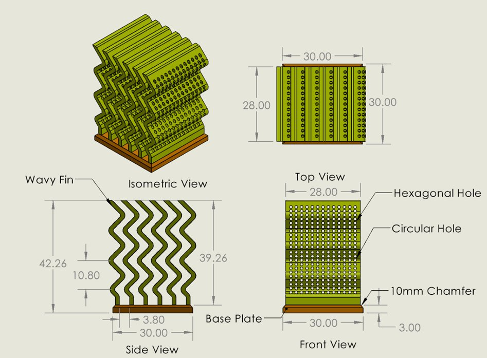
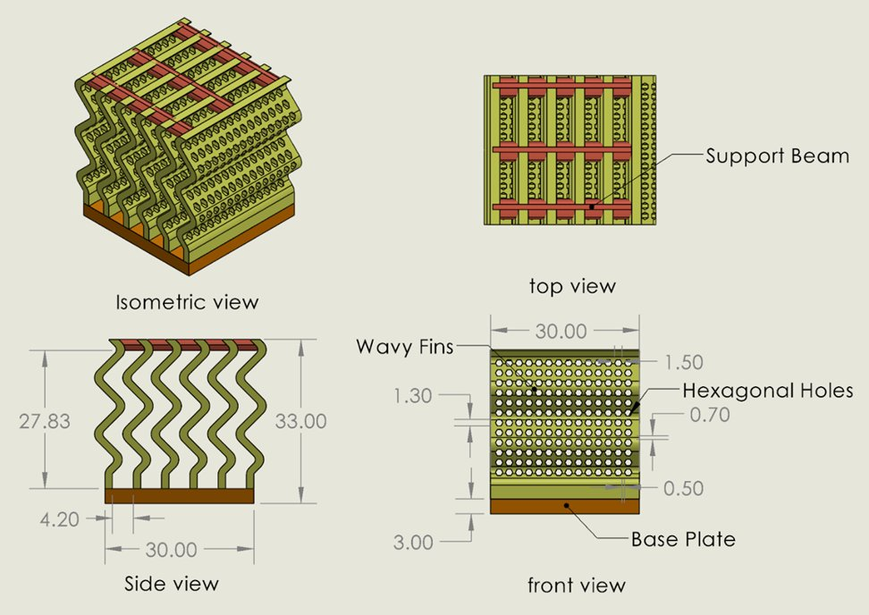
Conceptual design with perforations and chamfered base (left) — final design with support beams, shortened fins, and hexagonal perforations (right)
Manufacturing Results
The conceptual prints revealed warping and fanning. The final design prints resolved the primary design-related defects. Remaining issues — feature collapse and minor delamination — were traced to the available depowdering environment and manual part handling, not the design. An industrial binder jetting setup with controlled depowdering and bottom-up build orientation would resolve both.
Conceptual Design Prints
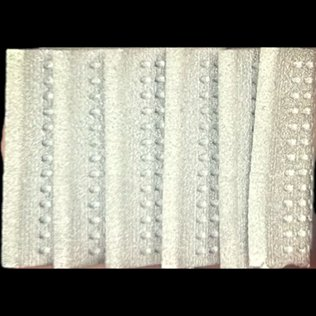
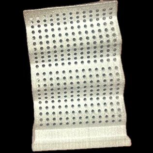
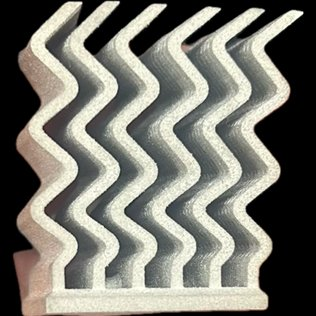
Conceptual design prints — warping along the front plane and fin fanning visible across specimens
Final Design Prints
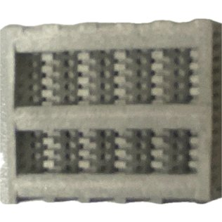
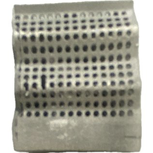
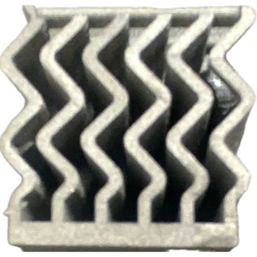
Final design prints — support beams eliminated fanning; fin geometry holds form consistently across all three specimens
Thermal Analysis
ANSYS steady-state thermal simulations applied a heat flux of 22,222 W/m² (representing a 20 W avionics chip) to the base of both heat sinks, with a convection coefficient of 40 W/m²·°C and ambient temperature of 30°C representing a forced-air cooled aircraft electronics bay. The final design maintained lower temperatures throughout — approximately 7°C cooler on average than the straight-fin baseline, which was 7 mm taller.
The temperature reduction results from two mechanisms: increased effective surface area from the wavy geometry and perforations, and boundary layer disruption. Straight fins allow the thermal boundary layer to grow continuously along the fin surface, reducing the local heat transfer coefficient downstream. Wavy fins continuously redirect the airflow, preventing the boundary layer from establishing and maintaining a higher convective coefficient along the full fin length.
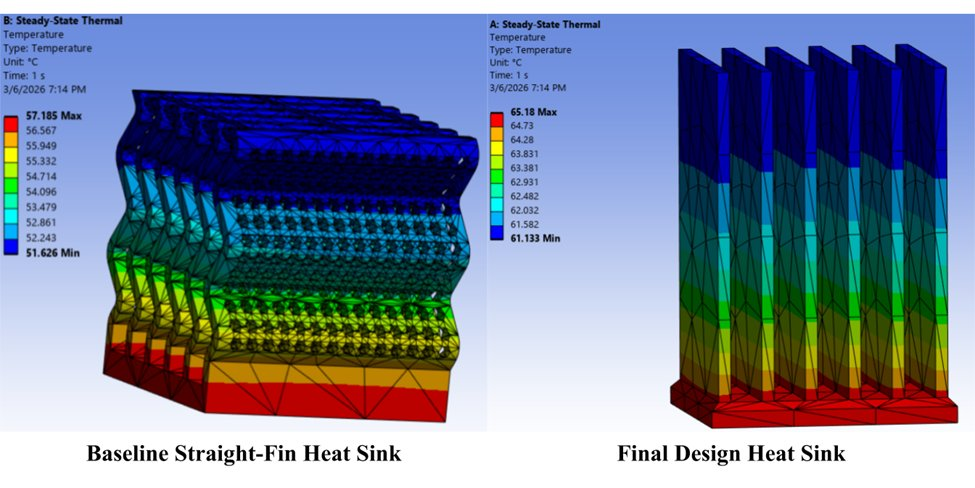
Steady-state thermal contours — straight-fin baseline (left) vs. final wavy-fin design (right). Average temperature reduction: ~7°C.
Fluid Simulation
Fluent CFD analysis with a fan-driven inlet perpendicular to the fin channels revealed fundamentally different airflow behavior between the two designs. The straight-fin baseline creates stagnant low-velocity regions between fins where air bypasses rather than penetrating the fin channels. The wavy-fin design forces airflow to repeatedly change direction, promoting turbulent mixing and increasing local velocity within the channels — directly increasing convective heat transfer and explaining the thermal simulation results.
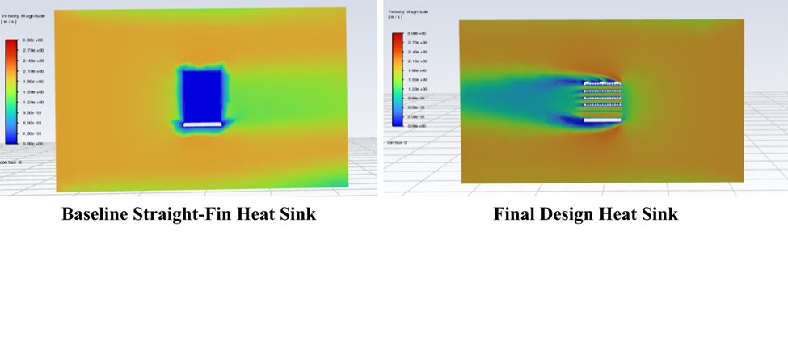
Velocity magnitude (m/s) — straight-fin baseline shows flow bypass (left); wavy-fin design channels flow through the fins at higher velocity (right)
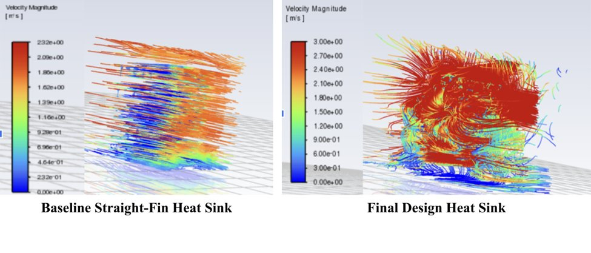
Fluid pathlines — baseline shows laminar bypass (left); wavy-fin design produces turbulent mixing through the fin channels (right)
Reflection
Binder jetting enables thermal geometries that are not achievable conventionally — the wavy-fin performance advantage exists specifically because additive manufacturing made the geometry producible. The technology's value is not just in the printing but in unlocking designs that could not be considered before.
Physical print failures from the conceptual iteration were more informative than simulation alone. Sintering-induced warping and fin fanning were not predicted by the thermal analysis — they were discovered through manufacturing, which then directly drove the design changes in the final iteration.
The support beams that solved the fanning problem introduce a trade-off: they improve manufacturability but reduce the fin-to-air surface exposure and restrict the conduction path. In a production setting, the beams would be machined off after sintering — a workflow that should be planned into the design from the start.